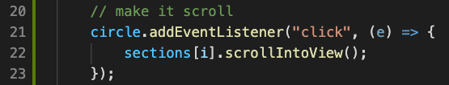

Declaring the values we need.
First we start out by declaring two variables for storing the sections and the navigation container.
This is done by using the query selector, and the query selector all.

An easy to follow tutorial on making a dot-navigation using vanilla JavaScript.
We are going to be making an interactive navigation bar, based on vanilla JavaScript. It is the navigation bar displayed on the right.
The navigation bar is dynamic, it can navigate between sections, and it creates new
navigation dots based on how many sections you are adding.
It will be based on the HTML & CSS included in the zip file below.
DownloadTo begin with, the concepts you should know before starting is:
Variables
The DOM
For loops
Arrays
Lets get started.
First we start out by declaring two variables for storing the sections and the navigation container.
This is done by using the query selector, and the query selector all.
This next part is focused on creating the dots based on the amount of sections, aswell as assigning the active
class to one of the dots.
The code is complicated at first glance, that is why we are breaking it down in smaller pieces.
First things first, everything is happening within a for loop, so it will run multiple times.
Next up we are creating a div element in the HTML code, and assign it with the dot class.
We are then checking whether each dot is the first dot on the loaded page.
This is done by comparing the Y-coordinate of each section to 0, and then adding the active class to the first section, if this is true. The Y-coordinate is gotten by utilizing the getBoundingClientRect
Next we are adding an eventListener to each circle to act as a link to each section. This is done by utilizing the scrollIntoView method.
Lastly we are appending the circle which we have created to the navigation container, which is stored in the nav variable.
We are now creating a function that takes a parameter, to change the state of the dot to and from active.
This is done by using another for loop. This loop removes the active class from every dot, and then adds the active class back to the dot specified using the parameter.
This is the primary event which makes the whole application work. This event fires every time the document is scrolling, this then triggers yet another for loop.
This loop runs the same check as the loop in the beginning, checking whether or not a section is visible or not, based on the Y-coordinate minus the height of the window divided by 2.
When you have finished you can compare your own solution to the one we made for this page!
It can be downloaded here.